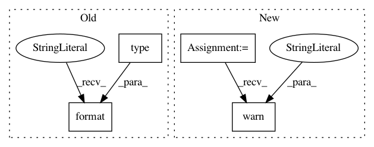

d245ae944a5fd850cedff69cbe445dbadb383dfa,stellargraph/data/explorer.py,GraphWalk,_check_nodes,#GraphWalk#Any#,136
Before Change
len(nodes) == 0
): // this is not an error but maybe a warning should be printed to inform the caller
print(
"({}) WARNING: No root node IDs given. An empty list will be returned as a result.".format(
type(self).__name__
)
)
def _check_repetitions(self, n):
if type(n) != int:
After Change
if (
len(nodes) == 0
): // this is not an error but maybe a warning should be printed to inform the caller
warnings.warn(
"No root node IDs given. An empty list will be returned as a result.",
RuntimeWarning,
stacklevel=3,
)
def _check_repetitions(self, n):
if type(n) != int:
self._raise_error(
In pattern: SUPERPATTERN
Frequency: 3
Non-data size: 4
Instances
Project Name: stellargraph/stellargraph
Commit Name: d245ae944a5fd850cedff69cbe445dbadb383dfa
Time: 2020-01-06
Author: Huon.Wilson@data61.csiro.au
File Name: stellargraph/data/explorer.py
Class Name: GraphWalk
Method Name: _check_nodes
Project Name: loli/medpy
Commit Name: e43527134cb2775a68d796a974048b45cc55c4bb
Time: 2019-02-10
Author: oskar.maier@googlemail.com
File Name: medpy/io/header.py
Class Name:
Method Name: set_pixel_spacing
Project Name: loli/medpy
Commit Name: e43527134cb2775a68d796a974048b45cc55c4bb
Time: 2019-02-10
Author: oskar.maier@googlemail.com
File Name: medpy/io/header.py
Class Name:
Method Name: get_pixel_spacing